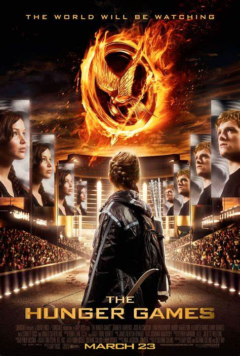
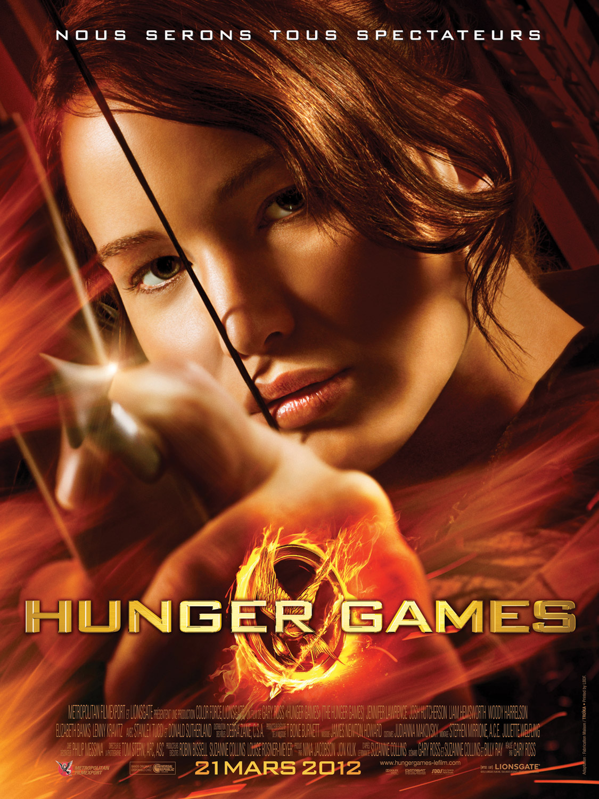

La nación de Panem está dividida en 12 distritos, gobernados desde el Capitolio. Como castigo por una revuelta fallida, cada distrito se ve obligado a seleccionar dos tributos, un chico y una chica de entre 12 a 18 años. Katniss Everdeen, de 16 años, del Distrito 12, se ofrece como voluntaria para ocupar el lugar de su hermana menor Primrose en los 74º Juegos del Hambre. Ella y su compañero de tributo Peeta Mellark son escoltados al Capitolio por su acompañante Effie Trinket y su mentor Haymitch Abernathy, el único ganador vivo de los Juegos del Distrito 12. Haymitch insiste en la importancia de conseguir patrocinadores, ya que pueden proporcionar regalos que podrían salvar vidas durante los Juegos. Mientras se entrena, Katniss observa a los "Carreros" (Marvel, Glimmer, Cato y Clove), voluntarios de los ricos Distritos 1 y 2 que se han entrenado para los Juegos desde una edad temprana. Durante una entrevista televisada con Caesar Flickerman, Peeta expresa su amor por Katniss, lo que ella ve inicialmente como un intento de atraer patrocinadores; más tarde se entera de que su admisión es genuina. Al comienzo de los Juegos, Katniss toma algunos de los suministros colocados alrededor de la Cornucopia, una estructura en el punto de partida, y escapa por poco de la muerte. La mitad de los 24 tributos mueren en el combate inicial, y sólo 11, incluidos los cuatro Carreros, sobreviven el primer día. Katniss trata de mantenerse alejada de los demás, pero Séneca Crane, el Jefe del Juego, provoca un incendio forestal que la lleva hacia ellos. Se topa con los Carreras, con los que aparentemente se ha aliado Peeta, y huye hacia un árbol. Peeta aconseja a los Carreros que la esperen. A la mañana siguiente, Katniss ve a Rue, la joven tributo del Distrito 11, escondida en un árbol adyacente. Rue le llama la atención sobre un nido de avispas venenosas genéticamente modificadas. Usando un cuchillo, Katniss hace que el nido caiga sobre las Carreras que duermen debajo; Glimmer muere, pero las otras escapan. Katniss se desorienta al ser picada varias veces. Peeta regresa y le dice que huya. Rue ayuda a Katniss a recuperarse y se convierten en amigas y aliadas. Katniss destruye los suministros que las Carreras almacenaban detonando las minas que los custodiaban, mientras Rue proporciona una distracción. Más tarde, Katniss encuentra y libera a Rue de una trampa, pero Marvel le lanza una lanza que la empala. Katniss lo mata con una flecha. Consuela a Rue cantándole y, tras su muerte, adorna su cuerpo con flores, lo que desencadena una revuelta en el Distrito 11. El presidente Coriolanus Snow advierte a Crane sobre los disturbios. Haymitch persuade a Crane para que cambie las reglas y permita que haya dos ganadores siempre que sean del mismo distrito, sugiriendo que esto pacificará al público. Después del anuncio, Katniss encuentra a un Peeta gravemente herido. Otro anuncio promete que lo que más necesita cada superviviente se proporcionará en la Cornucopia a la mañana siguiente. A pesar de la vehemente oposición de Peeta, Katniss sale a buscar medicinas para él, pero es emboscada y dominada por Clove, que se regodea de la muerte de Rue y se prepara para matarla. Thresh, el tributo masculino del Distrito 11, escucha y mata a Clove. Perdona a Katniss una vez, por el bien de Rue. La medicina cura a Peeta de la noche a la mañana. Mientras busca comida, Katniss oye un cañón que anuncia una muerte. Corre hacia Peeta, que ha recogido, sin saberlo, bayas mortales de bloqueo nocturno. Descubren a "Comadreja", el tributo femenino del Distrito 5, envenenado por las bayas de bloqueo nocturno que recogió tras observar a Peeta. Crane libera entonces bestias genéticamente modificadas que matan a Thresh y obligan a Katniss, Peeta y Cato -los tres últimos supervivientes- a subir al tejado de la Cornucopia. Cato le hace una llave de cabeza a Peeta y lo usa como escudo humano contra el arco de Katniss. Peeta indica a Katniss que dispare a la mano de Cato, lo que permite a Peeta lanzarlo a las bestias de abajo. Katniss lo mata con una flecha para acabar con su sufrimiento. Crane luego revoca el cambio de regla permitiendo que ganen dos vencedores. Peeta le pide a Katniss que le dispare, pero ella lo convence de comer bayas de bloqueo nocturno juntos. Justo antes de que lo hagan, Crane los declara apresuradamente co-victoriosos. Luego, Haymitch advierte a Katniss que se ha ganado enemigos a través de estos actos de desafío. Snow tiene a Crane encerrado en una habitación con bayas de bloqueo nocturno, después de lo cual el astuto presidente considera su próximo mes.